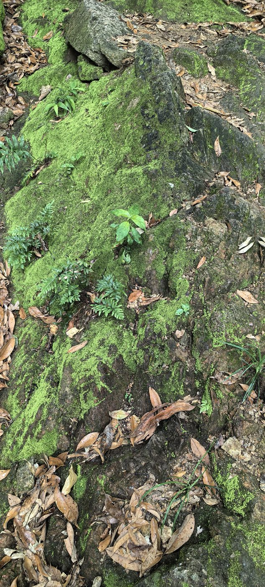
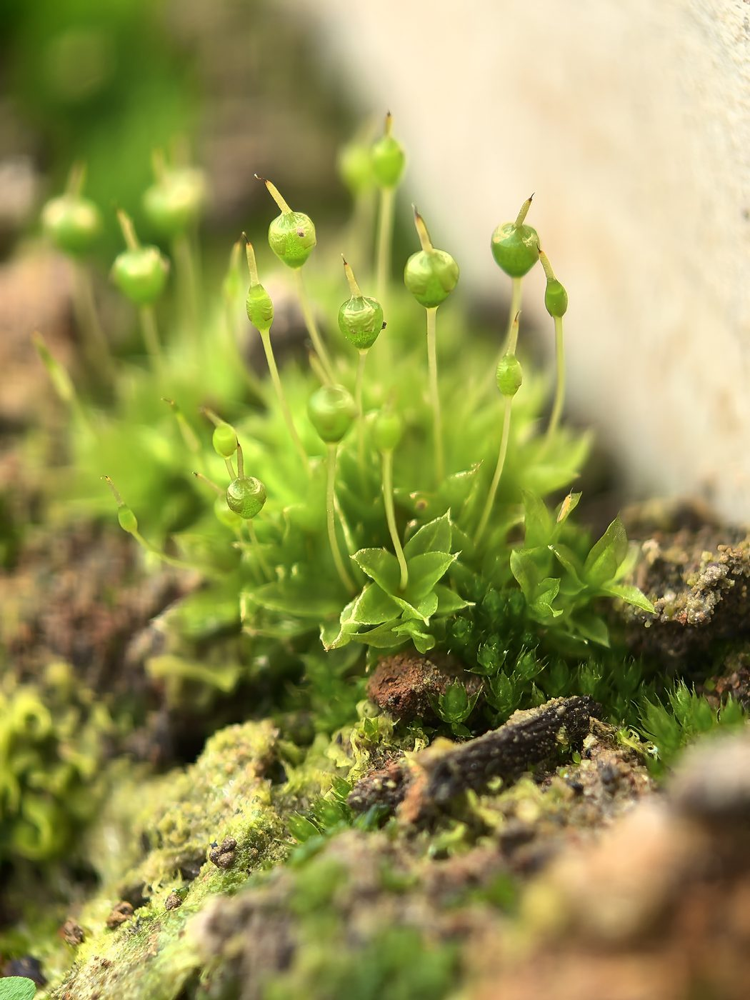
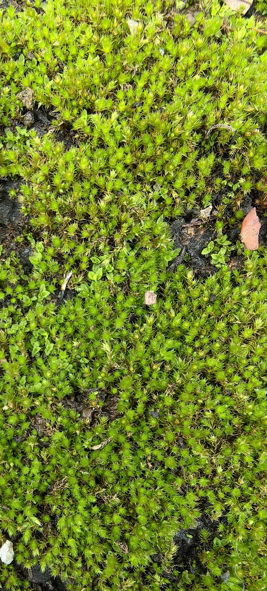
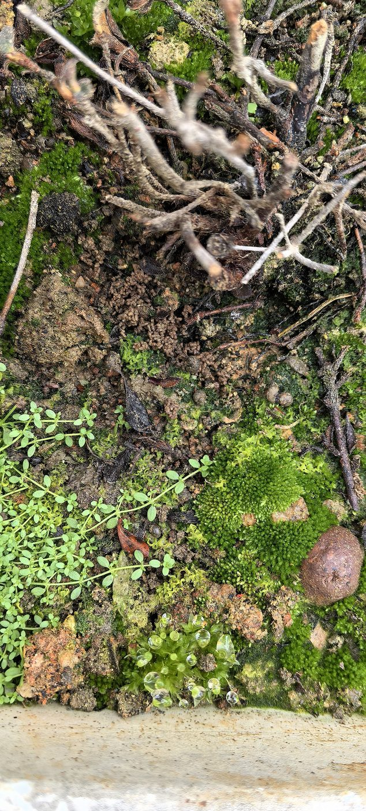

The first patch found me on the Yinhu Mountain trail. I almost walked past it — a boulder by the path, half-buried in fallen leaves, wearing a coat of the brightest green. Up close, the moss was not one plant but a crowd: thousands of tiny shoots packed shoulder to shoulder, holding dew like a sponge holds water. Ferns and dry leaves pressed in from the edges, yet the moss simply filled every gap the stone offered. No roots digging deep, no flowers asking for attention. Just quiet coverage.

The other three patches live closer — in my flowerpots at home. They arrived uninvited, which is exactly why I kept them. Under the lens, a pot becomes a forest. One photograph shows slender stalks rising from the green carpet, each tipped with a capsule like a tiny lantern on a wire — the sporophytes, moss's way of casting spores into the wind. Another shows the miniature leaves overlapping like scales, star-shaped when seen from above, fresh as seedlings though the plant may be older than the pot itself.

What moss teaches me is scale. To the mountain, this boulder is nothing. To the moss, the boulder is a continent, and the crack in its surface is a valley with its own weather. I run trails for distance, but moss rewards the opposite: slowing down, kneeling, looking at one square inch for a long time. There is a whole world there, thriving at ankle height, indifferent to being noticed.


Next time on the trail, I plan to walk the same section after rain and compare how the color deepens — moss photographs its own hydration.